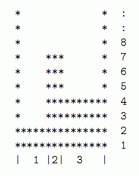

夏日那让人喘不过气的酷热将奶牛们的烦躁情绪推到了最高点．最终，约翰决定建一个人工湖供奶牛消暑之用．为
了使湖看起来更加真实，约翰决定将湖的横截面建成N(1≤N≤105)个连续的平台高低错落的组合状，所有的平台从
左到右按1到N依次编号．当然咯，在湖中注入水后，这些平台都将被淹没． 平台i在设计图上用它的宽度wi(l
≤wi≤1000)和高度（你可以理解为该平台顶离约翰挖的地基的高度）Hi.（1≤Hi≤1000000）来描述的．所有平台
的高度都是独一无二的．湖的边缘可以视为无限高的平台．下面给出了一张约翰的设计图：

按约翰的设想，在坑挖好后，他会以1单位每分钟的速度往最低的那个平台上注水．水在离开水管后立即下落，直
到撞到平台顶或是更早些时候注入的水然后，与所有常温下的水一样，它会迅速地流动、扩散．简单起见，你可以
认为这些都是在瞬间完成的．约翰想知道，对于每一个平台，它的顶部是从哪个时刻开始，与水面的距离至少为1
单位长度．注意：数据不保证答案全部在32位整型变量的范围内